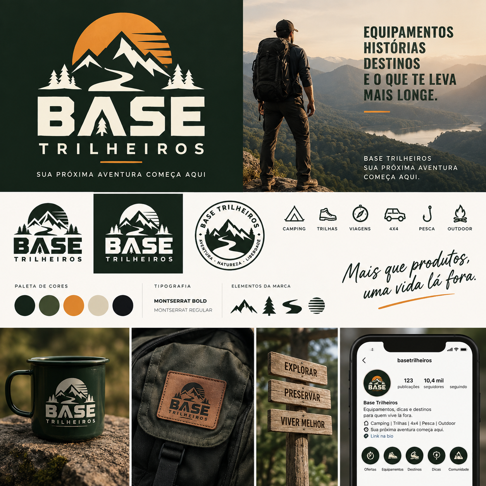
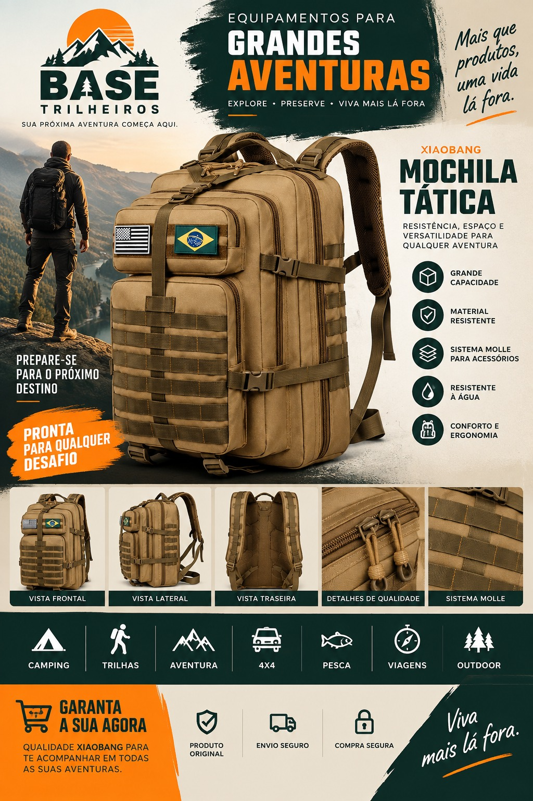

Foco na sua aventura
Produtos voltados para camping, trilhas, viagens e momentos ao ar livre. Tudo conectado ao seu jeito de explorar.
Aventura · Natureza · Liberdade
Equipamento certo. Novos caminhos.
Uma comunidade para quem vive lá fora.


01 / Nossa base
A Base Trilheiros nasce desse jeito de ver o mundo: sempre existe um caminho para explorar, um lugar para conhecer e uma boa história para viver.
Reunimos o universo do camping, das trilhas e das viagens com equipamentos e ofertas para ajudar você a preparar a próxima saída.
Da primeira barraca
ao próximo grande destino.
02 / Encontre seu caminho
Do acampamento de fim de semana à estrada de terra. Existe um mundo inteiro esperando por você.
Sua casa onde a natureza chamar.
Barracas · Conforto · Cozinha 02O próximo passo já vale a vista.
Calçados · Mochilas · Hidratação 03Prepare-se para ir mais longe.
Travessias · Proteção · Equipamentos 04Leve o essencial. Volte com histórias.
Bagagem · Organização · Praticidade 05A aventura continua fora do asfalto.
Expedições · Acessórios · Estrada 06Seu encontro com a tranquilidade.
Equipamentos · Acessórios · Lazer 07Mais possibilidades a céu aberto.
Iluminação · Utilidades · Natureza03 / Juntos, vamos mais longe
Produtos voltados para camping, trilhas, viagens e momentos ao ar livre. Tudo conectado ao seu jeito de explorar.
Acompanhe os produtos e as ofertas compartilhados pela Base Trilheiros, com links para conferir os anúncios.
Faça parte de uma comunidade que se identifica com aventura, natureza, liberdade e uma vida mais lá fora.
Prepare a mochila. A próxima história é sua.
Entre no grupo da Base Trilheiros e acompanhe nossas ofertas de equipamentos outdoor.